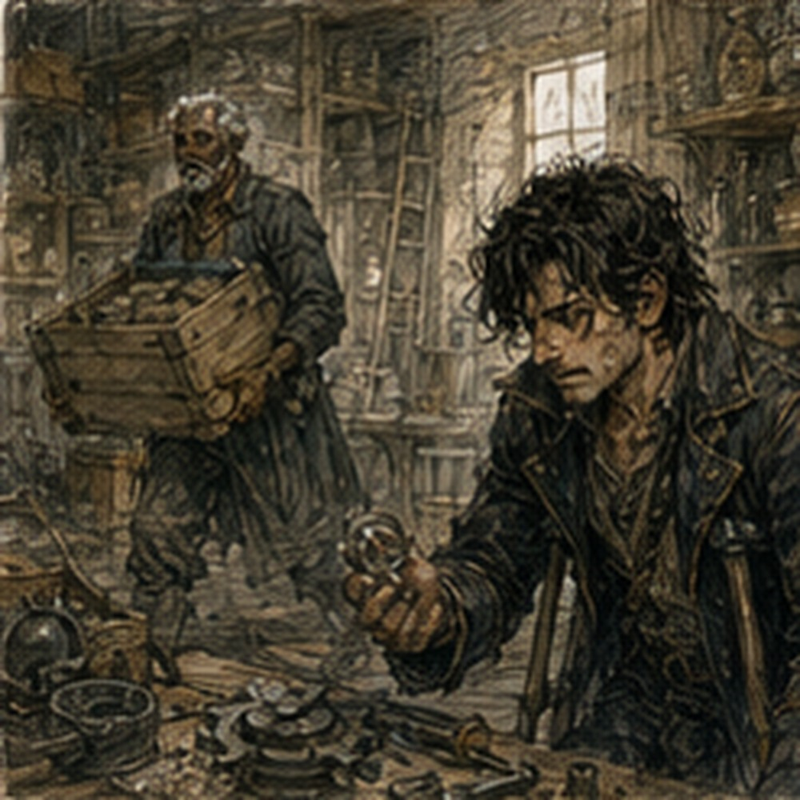
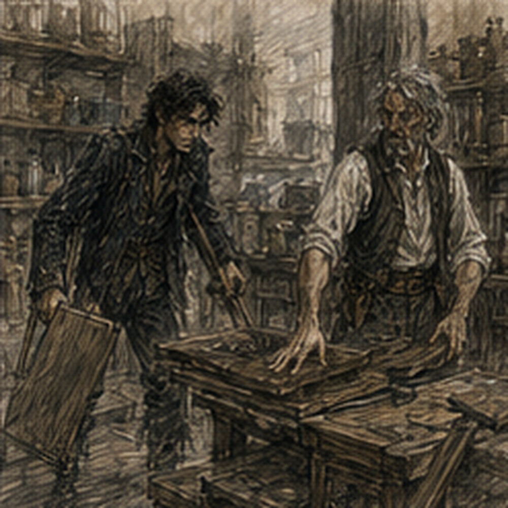

Antonius was already cleaning when I arrived. This was sufficiently wrong that I stopped in the doorway. He had his sleeves rolled to the elbows, a rag over one shoulder, and a wooden crate in his hands. Dust covered one side of his trousers. There was a streak of something black across his wrist. He looked at me.
"Sunrise means before the sun has finished rising." I looked behind him. Then back at him.
"What are you doing?"
"Cleaning."
"I can see that."
"Good. Yesterday we established you can count. Today we're working on observation."
He carried the crate past me and set it in the hall. I remained in the doorway. The back storeroom was larger than I expected and worse than Antonius had implied. Shelves leaned under abandoned inventory. Broken furniture had been stacked against one wall. Bundles of cloth sat beside chipped crockery, rusted tools, old ledgers, cracked cases, bent fittings, three wheels of different sizes, and something that might once have been part of a loom. It smelled like dust, oil, damp wood, old paper, and failure. I looked at Antonius again.
"Why are you cleaning?"
"Because the room needs cleaning."
"No." He paused.
"No?"
"That's not why."
"It is exactly why."
"You have employees."
"So?"
"Employees clean."
"Apparently not this room."
"Then make them."
"I did." I waited. He picked up a broom.
"Poorly." I frowned.
There had to be more. Audit. Theft. Hidden inventory. A test. Something in the room mattered and Antonius wanted to see whether I noticed it. That made sense. I entered. Antonius handed me a second broom.
"Start there." I took it automatically. Then realized what had happened.
"No."
"Greg."
"I understand the labor arrangement. I'm questioning the allocation."
"You're questioning a broom."
"My time has higher-value uses."
"Your time currently belongs to me."
"Temporarily."
"There it is."
"What?"
"Nothing." He swept.
I stood there holding the broom. This was absurd. Future Antonius Vale had once financed an army without technically financing an army. He had owned pieces of ports through three layers of debt, controlled enough warehouse space to make shortages appear accidental, and supposedly destroyed a noble house by purchasing obligations nobody else thought connected. I did not know how much of that was true. Probably less than people claimed.
Possibly more.
The point was that I remembered his name. That alone should have bothered me more than it had. By the end of my first life I had met kings, guildmasters, generals, archmages, merchant princes, criminals, saints, and enough supposedly important people to make importance feel cheap. Most of them had blurred into titles, faces, anecdotes, or nothing at all. Antonius Vale had not. Name. Weight. The sense that rooms changed when he entered them. If S-class Greg remembered you after forty years, you had been good. Powerful. Dangerous. Useful. Something. If he remembered you while forgetting half of what you had actually done, you had probably mattered even more than the surviving memories suggested. Present Antonius was still personally aware of flour. Whatever he became later, I was looking at the early construction of something much larger than I could currently piece together. That man was currently sweeping mouse shit. I watched him.
Antonius noticed.
"If you're waiting for the lesson, there isn't one."
"I didn't say there was."
"You have the face."
"What face?"
"The one where everything around you becomes a metaphor." I looked down at the broom.
"I don't do that."
"You reorganized my warehouse and called it momentum."
Fair. I started sweeping. For a while we worked without talking. That was strange too. I expected Antonius to supervise. Instead he moved things. Actually moved them. He knew which crates could be thrown away without opening them. He knew which ledger bundles had to be kept. He knew that a cracked green chest belonged to a dead cooper's account and that the cooper's daughter had six months left to reclaim it.
"How do you know that?" I asked. Antonius did not look up.
"Know what?"
"The chest."
"It's mine."
"No. It isn't."
That made him look at me.
"You just said the daughter can reclaim it."
"Until winter."
"So it's collateral."
"Yes."
"Then it isn't yours."
"It is legally."
"That's not the same thing." Antonius considered me.
"Interesting opinion from a man whose labor I legally own."
"Temporarily." He smiled. I swept harder.
The room began separating itself in my head. Not physically. Categories. Recoverable collateral. Unsellable collateral. Broken inventory. Records. Tools. Goods nobody remembered. Things Antonius kept because throwing away something once valued felt like admitting the loan behind it had gone bad. Maybe. That last one was inference. Check. I picked up a brass fitting.
No idea. Put it in the discard crate. A bundle of rotted leather straps. Trash. A chipped ceramic vessel with a narrow throat. Possibly useful. Probably trash. A box of black stones. I stopped.
No.
Not stones. Slag. Maybe. I crouched. Antonius kept sweeping. The pieces were porous, glossy in places, ugly as sin. I picked one up. Light. Industrial waste? Smelting residue. Future use? My memory offered three unrelated things at once. Road aggregate. Heat-resistant lining. A tavern in Konia where a drunk metallurgist had explained why old furnaces accidentally produced better insulating material than new ones. Or was that volcanic glass?
Different material. I turned the piece over.
"What is this?"
"Trash."
"Specific trash."
"Foundry waste."
"From where?" Antonius pointed with his broom.
"Discard."
"Which foundry?"
"Greg."
"Do you know?"
"No." I stared at the black chunk.
Potential. Not enough information. I put it in a separate pile. Antonius stopped sweeping.
"That's the trash pile."
"I know."
"You put trash beside the trash."
"Different trash."
"Of course." He resumed.
Ten minutes later I had six categories. Antonius had two. Keep. Throw away. His system was faster. Mine was better. Probably. The room fought me. Every object suggested something. A bent iron brace reminded me of modular shield frames used during the Western campaigns. Too early. Wrong shape. A cracked lens reminded me of rangefinders. Not invented. Could Pell use it?
Maybe. A spool of copper wire was absolutely useful. Antonius said it was corroded. Still copper. A stack of warped wooden plates looked worthless until I realized they were standardized blanks for something. I did not know what. I kept them anyway. Antonius moved them back to discard. I moved them back to keep. He moved them again. I stared at him.
"What?"
"Those might matter."
"To whom?"
"I don't know yet."
"Trash."
"Potential."
"Trash with aspirations." I put them in keep. He let me.
Victory. Then I found the little box. It was under a broken chair. Wooden. Palm-sized. No lock. I opened it. Inside was a dull gray frame no longer than my palm, two finger-length rods, and a set of tiny stepped plates nested into grooves along one edge. It looked less like a device than the part of a device someone had forgotten to finish. Ugly. Unmarked except for a shallow stamp on one plate.
A crown?
No.
Three teeth. I knew that mark. Maybe. My heart sped up. I picked up the plate. Three teeth. Not a crown. A comb.
No.
I had seen it on something. Years from now. Where? Dungeon equipment? Artificer parts? Military? I closed my eyes. Memory did what memory always did when I actually needed it. Nothing useful. Then texture. Rain. Canvas. Someone swearing. A broken mana lantern. A woman with burned fingers saying they should have bought the old fucking... What? I opened my eyes. Antonius was beside me.
"Trash," he said.
"No."
"No?"
He nudged the box with two fingers. "Bent precision scrap. Failed artificer. Nobody wanted it. Toss it." He walked away. I looked at the box. Then at Antonius. Then at the box again. For one beautiful second, the correct financial decision was obvious. Say nothing. Put it aside. Ask later whether I could have the trash. Free was an excellent price. I should have done that. Instead I said, "That is potentially extremely valuable."
Antonius stopped. Fuck. He turned around slowly.
"Extremely?"
"Potentially."
"You added that after."
"It was implied."
"It wasn't." He came back and picked up the gray frame. I turned one of the stepped plates toward the light.
Three teeth. Where had I seen it? Think. Not enough information yet. But the workmanship was wrong for scrap. Tiny grooves. Matched steps. Reference surfaces rather than moving parts. Precision. Old precision.
"Where did you get this?"
"A failed artificer."
"Name."
"Why?"
"Because this isn't trash."
"You still don't know what it is."
"Correct."
"But it's extremely valuable."
"Also correct." He laughed once. "I'll sell you the trash for three silver."
There. Three silver. I could afford that eventually. I could have gotten it free thirty seconds ago. This was already one of the worst negotiations of my second life.
"Done," I said immediately. Antonius did not hand it over. Of course he didn't.
"How valuable?"
I looked at him. There are questions a sensible man lies to. This was one. I knew that. I understood the incentives perfectly. I had already agreed to three silver. I could say ten. Twenty silver. A gold if I wanted to sound dramatic. Then my memory finally caught on the teeth. Not a device. A reference. Tere. Orlan Tere. Master gauges.
The thing in Antonius's hand was not meant to do useful work itself. It was meant to tell the tools that did useful work exactly where correct was. And Antonius had asked me a direct numerical question.
"Forty gold," I said.
The number sounded so stupid out loud that I wanted to swallow it back. Antonius went still. I made it worse.
"At least."
Silence. Three silver had become forty gold because I had been unable to keep my mouth shut for perhaps twelve seconds.
Excellent.
Antonius looked at the frame. Then at me.
"Forty gold."
"To the right buyer."
"And to the wrong buyer?"
"Trash."
That interested him more than the number.
"Explain."
I pointed at the nested plates. "I think this is a master calibration gauge. Early mana-regulation work. You don't cast with it. You don't put it in a machine. It sets tolerances on the precision tools that make other fittings. To almost everyone in Carrow, it is a little gray box of useless metal. To the handful of artificers trying to reproduce this standard without rebuilding the reference from scratch? Forty gold is conservative."
"And you can use it?"
"No."
His eyebrows rose.
"Pell might be able to identify it. Maybe authenticate it. I personally have no use for it at all."
"So you want to pay three silver for something useless to you."
"I want to pay three silver for something worth forty gold to somebody else. That's called trade. You should look into it." Antonius smiled. I should not have smiled back.
"Three silver," I said. "We agreed."
"Did we?"
"Yes."
"Before you told me forty gold."
"Your ignorance is not grounds for renegotiation."
"Neither is yours."
"I am suddenly much less ignorant." He turned the frame over. "Three teeth. Means nothing to me."
"It means something to someone."
"Who?" I hesitated.
That mattered. I could remember the standard. I could remember the kind of people who cared. I could not yet name the buyer.
"A very small number of extremely annoying specialists."
"Names."
"Not enough information yet." He laughed. I hated him.
"Five silver," Antonius said.
"You said three."
"Then you said forty gold."
"Four."
"Five."
"You're a thief."
"Lender."
"Four and you don't add interest."
"Five and I don't throw it away while you're arguing." I stared at him. He stared back.
"Fine. Five." He put the box on the keep shelf and wrote my name on a scrap tucked beneath it. I pointed. "That's mine."
"When you pay five silver."
"Add it to the ledger."
"No more advances."
"This isn't an advance. It's seller financing."
His mouth twitched.
"End of week."
I looked at the box. Five silver for something I believed was worth at least forty gold. An extraordinary purchase. A catastrophic negotiation. Both could be true. Then suspicion arrived.
"Why was that under a chair?"
"Because, Greg, until thirty seconds ago it was trash."
"Stop saying that." He went back to sweeping. I stared at the Tere gauge.
Forty gold. Maybe more. More than the visible contents of this warehouse put together, if my memory was right. And almost completely useless to me until I found one of the tiny number of people who understood why. That was the important distinction. Value was not the same as usefulness. I returned to work. Twenty minutes later I found a cracked wooden case containing six green glass cylinders. My pulse jumped again. Antonius glanced over.
"Trash."
"Wait." He sighed.
The cylinders were cloudy. Each had a metal cap. No mark. I picked one up. Future alchemical storage? Early pressure vessels? Mana cells?
No.
Too primitive. Could be rare. Could be important. Could be... I shook one gently. Something rattled. Antonius said, "Careful."
"Why?"
"No idea." I froze. He smiled.
Bastard. I set it down.
"What are these?"
"Old dye cartridges." I knew nothing about dye cartridges. Could become useful. Maybe glass composition?
Caps? I examined one. Antonius watched.
"Extremely valuable?" I hesitated.
"Maybe."
"How much?" I looked again.
No recognition. No memory texture. Nothing except my own desire not to miss something. That was not evidence.
"Trash," I said. Antonius nodded.
"Good." I looked at him.
"What?"
"Nothing."
There it was. Something. Test? Had he known about the gray box? I looked toward it. Then at Antonius. He swept.
"You knew."
"Knew what?"
"About the box."
"I knew it existed."
"You put me in here to find it."
"No."
"You're lying."
"Sometimes."
"Was that a test?" He stopped.
The room had become noticeably brighter as we cleared the small window. Dust floated in the beam between us. Antonius rested both hands on the broom.
"I wanted to know something."
"What?"
"If everything was valuable to you." I frowned.
"That's stupid."
"Is it?"
"Obviously not everything is valuable."
"You bought garbage rocks."
"Kestrin shale is not garbage."
"You gamble for operating capital."
"Poor example."
"You wanted to keep warped wood because it had a shape."
"Standardization matters."
"You've tried to save half this room."
"Less than half."
"Greg."
"Fine." He nodded toward the gray box.
"That came from a man named Orlan Tere."
Tere. There. The memory snapped into place hard enough that I stopped breathing for a second. Not Teren Coilworks. Orlan Tere. Tere gauges. Tere tolerances. Early mana-regulation hardware had a repeatability problem nobody cared about until suddenly everybody did. Tere had solved part of it too early, too expensively, for a market too small to keep him alive. His workshop failed. The standard did not.
Years later, other artificers copied the tolerances. Toolmakers copied the reference geometry. The three-tooth mark survived in specialist shops long after almost everyone forgot the man who made it. And the little gray frame on Antonius's shelf was not merely an early fitting. It was the thing used to tell other precision tools what correct looked like. A master reference.
Forty gold was not collector nonsense. It was replacement-cost nonsense. Rebuilding the reference properly could cost more than buying the surviving original, assuming the buyer trusted it. Antonius watched my face.
"You know him?"
"No."
"Then why do you look like that?"
Because I remembered his work after forty years despite never knowing the man. That was the same category of evidence as Antonius's name, just narrower. Things that survived in S-class Greg's memory had survived competition. Wars. Breakthroughs. Monsters. People with enough gravity to leave dents. Orlan Tere had left a dent in a technical standard. Antonius Vale had left one in the world.
"He's important," I said.
"He owes me eleven silver." I blinked.
"Currently?"
"No, Greg. Forty years from now." I looked at him. He looked at me.
Careful.
"Where is he?"
"Gone."
"Dead?"
"No idea. Closed the workshop. Left the box and three other crates as collateral. I sold what I could."
"What was in the other crates?"
"Tools. Brass. Wire. Two half-built devices."
"Where?"
"Sold."
"To whom?" He smiled. I hated him.
"Ledger."
"Absolutely not."
"Antonius."
"Clean."
I stared toward the shelf. Five silver suddenly felt criminally cheap. Forty gold was conservative if the right artificer understood what the gauge represented. The hard part was not owning the value. The hard part was connecting it to the tiny market capable of recognizing it. Which meant the object solved none of my immediate problems. No rent. No debt payment.
No mana conditioning. No sword training. No automatic fortune. It was forty gold sitting on a shelf pretending to be five silver until I did more work. Of course it was. Unless my memory was wrong. Unless Orlan himself never mattered and someone else used the name. Unless the mark changed. Unless the story I remembered was retrospective mythology. Still. This was exactly the kind of lead future knowledge was actually good for.
Not certainty. A lead. Check. Pell could inspect it.
Good.
One problem. I put it down.
"That was the test?"
"Partly."
"What was the right answer?"
"There wasn't one."
"Then it's a bad test."
"I wanted to know whether you'd call everything treasure."
"I didn't."
"No."
"And I recognized the valuable thing."
"Maybe."
"It's valuable."
"You still don't know what it does."
"I know who made it."
"After I told you."
"I knew the mark."
"You guessed the mark."
"I remembered it."
"Same thing with confidence."
That was offensive. Also not entirely wrong. I picked up the broom.
"Why do you care?" Antonius resumed sweeping.
"About what?"
"Whether I call everything treasure."
"Because people who think everything is an opportunity usually end up owing me money." I stopped. He kept sweeping.
"That was targeted."
"Yes."
"You could have just said that."
"Would you have listened?"
"No."
"Then clean." I cleaned.
The chapter of my life in which Antonius Vale taught me wisdom through sweeping did not occur. He was not teaching me. That became increasingly clear. He simply had a room to clear and wanted to know whether the strange debtor who kept turning assignments into projects could distinguish a real possibility from his own excitement. That was somehow more irritating. I wanted lessons. Lessons meant structure. Lessons meant somebody had arranged the world so the pain produced a useful conclusion. Usually nobody had. Usually there was just pain and whatever you managed to steal from it afterward. I swept under a shelf. Found three copper coins. Antonius held out his hand.
"Seriously?"

"My floor." I gave him the coins.
"Loan shark."
"Lender."
We worked. At some point the silence stopped feeling like silence. Antonius did not fill rooms unnecessarily. That was another difference between present Antonius and the man I remembered. Future Antonius had barely spoken because people waited for him. Present Antonius barely spoke because he was comfortable not speaking. Maybe that was where it started. Or maybe I was doing the metaphor thing again. I looked at him.
"What?"
"Nothing."
"Good." I kept sweeping.
An hour later we moved a cabinet together. It was heavier than it looked. Antonius took one end. I took the other.
"Lift."
We lifted. No Rusk. No Toma. No employee summoned to do it. Antonius grunted, adjusted his grip, and backed through the doorway. I almost dropped my side because I was thinking.
"Watch it."
"I have it."
"You almost didn't."
"I was distracted."
"By furniture?"
"By you." He stopped.
The cabinet nearly crushed my fingers.
"Move."
We set it down in the hall. Antonius straightened.
"Why?"
"You actually work." He looked at his dusty hands.
"Yes."
"No. I mean you work."
"I understood the sentence."
"Why?" He frowned.
There was no clever answer waiting. That bothered me.
"Because it needs doing."
"You have people."
"You've mentioned."
"Your time is worth more."
"Sometimes."
"Always."
"No."
That answer came immediately. I leaned against the cabinet.
"Explain."
"No."
"Antonius." He walked back into the room. I followed.
"You know what everything in your operation does," I said.
"Not everything."
"You knew the cooper's chest."
"Yes."
"The grain."
"After you pointed it out."
"You know the routes."
"Some."
"Inventory."
"Enough."
"Tenants."
"Most."
"Why?" He picked up a broken stool.
"Because it's my business."
There. Again. Not a lesson. Just an answer Greg did not like. I had run parties. Organizations. Operations. Campaigns.
By the end, I had known exactly which person to ask about almost anything. That had felt like mastery. It was mastery, in a way. Delegation was not failure. You could not personally know every strap, ration, spell component, injury, contract, horse, route, and personality in an operation large enough to matter. But I remembered rooms I had stopped entering. Equipment I had stopped touching. People whose names arrived to me attached to functions.
Quartermaster. Scout. Healer. Negotiator. Replacement. I had known the board. Had I known the pieces? Uncomfortable. Probably enough. That was the sort of answer I gave myself when I wanted a question to stop. Antonius threw the stool into discard.
"You're doing it."
"What?"
"Metaphor face."
"Fuck you." He laughed.
We found lunch in the front office. Bread. Cheese. Pickled onions. Antonius ate at the clerk's desk because the clerk had gone out. I expected him to have better food. Why? Future Antonius had been rich. Present Antonius had flour. Again. Tower. Bricks. I bit into the bread.
"How old are you?" Antonius asked. I looked up.
There it was.
"Nineteen."
"No." I nearly choked.
"What?"
"You're nineteen?"
"Yes." He stared. I stared back.
"Why?"
"I thought older."
"Thank you."
"That wasn't praise."
"Then fuck you."
"Twenty-three?"
"Nineteen." He leaned back.
"That's upsetting."
"Imagine how I feel."
Wrong answer. His eyes sharpened. I took another bite. He waited. I chewed.
"Why would you feel anything?" he asked.
"Because nineteen is a terrible age."
"You say that like you've done it before." I swallowed.
"Everyone has been younger."
"Not everyone talks about it like a disease they recovered from."
Interesting. Dangerous?
No.
Not yet. I could lie. Easy. Hard childhood. Older companions. Military upbringing. Dead parents. Some of it even true. Instead I shrugged.
"I had to grow up early." Antonius watched me.
That answer worked on most people because people were polite around dead parents. Antonius was not most people.
"That's not it." I smiled.
"What do you want me to say?"
"The truth would be novel."
"From a lender?" He smiled back.
Good.
Deflection accepted. Not believed. Different thing. He ate an onion.
"You're strange with money."
"I've noticed."
"You spend like you expect more."
"I can make more."
"You lose like you've lost more before." I said nothing.
"You talk about businesses like you've watched them fail."
"I've watched businesses fail."
"At nineteen."
"Carrow is educational."
"You don't get impressed by amounts that should impress you."
"That's because your interest rates are obscene."
"And then you panic over copper."
"Copper is currently offensive." He laughed quietly.
Then he looked at me for a long moment. Not interrogation. Indexing. I knew the feeling.
"What are you?" he asked.
That was a dangerous question only if I treated it like one.
"Currently?" He groaned. I smiled.
"Laborer."
"Bad one."
"Improving rapidly."
"Debtor."
"Temporary."
"Gambler."
"Selective."
"Warrior?"
"Again, potentially."
"Mage?"
"Eventually."
"Merchant?"
"Maybe." He shook his head.
"You don't know."
"Know what?"
"What you are." I almost answered immediately. Of course I knew.
Greg. Support mage. S-class. One of seven. Warrior before that. Leader. Manipulator, if we were being impolite. Dead man. Young man. Borrower. Investor. Expert. Laborer. The answers crowded each other. Antonius tore bread in half.
"You keep trying jobs like coats." I stared at him. That was uncomfortably close.
"Some coats fit."
"You buy all of them."
"Options are useful."
"Options cost money."
"Everything costs money with you."
"That's why I have money." I looked around the cheap office.
"Do you?" He smiled.
"More than you."
Fair. After lunch we went back. The room was almost manageable now. Floor visible. Shelves separated. Discard pile enormous. Keep pile smaller. My uncertain pile had been reduced from twenty-seven items to nine. Antonius had forced me to choose. Not verbally. He simply kept asking:
"Why?"
If I had an answer grounded in something, it stayed. If my answer began with "maybe someday," he threw it away. This was barbaric. Also efficient. We reached the last shelf. Three objects. A cracked brass compass. A bundle of narrow iron stakes. A leather case with a broken clasp. Compass first. Needle dead. Trash. Stakes. Could be survey equipment. Could be tent pegs.
No mark. Trash. Leather case. I opened it. Inside was a set of delicate steel instruments. Calipers. Tiny files. A hand drill. Two shapes I did not recognize. Good quality. Old.
"Keep," I said.
"Why?"
"Precision tools."
"Broken set."
"Still tools."
"Value?"
"Maybe three silver."
"One."
"Two."
"One."
"Fine. Keep." He put it on the shelf. I blinked.
"That's it?"
"What?"
"No argument?"
"You gave a reason."
I looked at the case. Then at the gray Tere box. Then at the enormous discard pile. The test had not been whether I knew the future. It had not even been whether I found the valuable thing. It was whether I could stop. That realization annoyed me enough that I did not share it. Antonius looked at me. Metaphor face. I deliberately made my face stupid. He laughed.
"Fuck you."
"Didn't say anything."
"You were going to."
"No."
"Liar."
"Lender."
We carried the discard outside. Some would be burned. Metal sold by weight. Glass separated. Wood salvaged where possible. Even Antonius's trash had categories once it left the room. Of course it did. At the bottom of the last crate I found a small red scarf. Cheap. Faded. No value. I held it. Memory came without permission. A woman laughing on a balcony forty years from now. Not this scarf. Not even the same shade. Just red cloth. I could not remember her name immediately.
That hurt. Then I did. Mira.
No.
Mira had black hair. This woman was... Gone. The memory dissolved. I stood there holding someone else's worthless scarf and thinking about a woman who had been dead for years and might currently be twelve. Or forty. Or not born. I had no idea.
"Greg?"
Antonius. I looked up.
"Trash," I said. He held out the discard sack. I almost put it in.
Then stopped. Why? No reason. No future value. No technical use. No opportunity. I wanted it. That was different.
"Can I have this?" Antonius looked at the scarf.
"Why?"
"I don't know." He waited. I did not invent one.
"I just want it."
Something in his face shifted.
"Take it." I put it in my pocket.
No ledger. No two silver. No joke. We finished near dusk. An entire day. Gone. No gambling. No sword training. No Pell. Hessa missed. That last one was bad. I would have to explain. She would say I chose the debt. She would be correct. I hated that in advance. Antonius locked the storeroom. I stood in the hall, dusty, tired, and weirdly satisfied. The room was clean. That should not have mattered.
It did. One room. One constraint. Finished. My brain immediately tried to expand. Inventory system. Collateral valuation. Storage rotation. Old debtor review. Orlan Tere. Pell needed to see the box. Could Tere still be in Carrow? Could we find him? If his workshop failed because the market was too early, could I... Stop. I actually stopped. That was new. Antonius noticed.
"What?"
"Nothing."
"You had a thought."
"I have many."
"And killed one."
"Postponed."
"Of course." He locked the front office. I pointed toward the storeroom.
"The Tere box."
"Two silver."
"I know."
"End of week."
"I know."
"If it's trash, I'm still keeping the silver."
"It isn't."
"Maybe." I smiled.
"You tested me."
"Maybe."
"I passed." Antonius looked at me.
"Did you?"
"I found the valuable thing."
"You found a thing you think will become valuable."
"Close enough."
"You also tried to save rotten wood."
"That was early in the process."
"And dye cartridges."
"I threw those away."
"Eventually."
"Passed."
He shook his head. But he was smiling. We stepped outside. The evening air felt cool after the storeroom. Antonius locked the door. I watched him check it twice. Future Antonius had people for this. Present Antonius checked his own lock. I wondered when that changed. I wondered whether it should. Then I wondered whether that was any of my business. Then I wondered whether knowing the answer could make me money. There I was. Antonius started walking.
"Where are you going?"
"Home." I had never considered that Antonius Vale had a home. That was stupid. Of course he did.
"Where?" He stopped.
"Why?"
"No reason."
"Good night, Greg."
"Do you have a wife?"
His face went completely blank. Interesting.
"Good night, Greg."
"Children?"
"Go away."
"That's not a no." He walked faster. I laughed.
"Sunrise tomorrow?" He raised one hand without turning.
"Ask Rusk."
That meant yes. Probably. I stood alone outside the warehouse. My hand found the red scarf in my pocket. Worthless. The gray box waited inside. Potentially extremely valuable. Two objects.
One I could justify. One I could not. I thought about Antonius asking what I was. Then about coats. Then about first-life Greg, who had eventually become so useful that people built plans around him. I had remembered that as leadership. Maybe some of it was. Maybe some of it was simply that someone else had always handed me the problem first. Keep them alive. Win this fight. Fix this spell. Get us through the pass.
Convince him. Break her. Make this party work. Constraints. I had been very good at constraints. Give me an empty life and apparently I borrowed money, started three careers, bought a sword, gambled, invested in garbage rocks, and argued with a loan shark about warped wood. I laughed. Alone.
"Excellent."
A passerby looked at me strangely. Reasonable. I started home. Tomorrow would have a problem. I found that comforting. That was probably something I should worry about. Later.